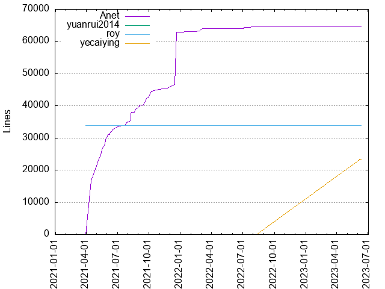
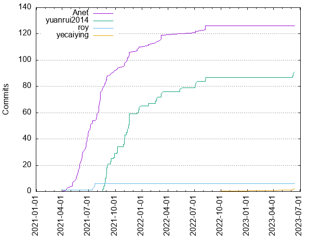

Authors
| Author | Commits (%) | + lines | - lines | First commit | Last commit | Age | Active days | # by commits |
|---|
| Anet | 126 (56.00%) | 64570 | 35806 | 2021-04-16 | 2022-08-08 | 478 days, 23:17:34 | 76 | 1 |
| yuanrui2014 | 91 (40.44%) | 0 | 0 | 2021-08-19 | 2023-06-12 | 661 days, 16:28:43 | 53 | 2 |
| roy | 6 (2.67%) | 33833 | 15790 | 2021-03-31 | 2021-07-22 | 113 days, 0:55:52 | 5 | 3 |
| yecaiying | 2 (0.89%) | 23332 | 4512 | 2023-06-06 | 2023-06-07 | 1 day, 5:19:13 | 2 | 4 |


| Month | Author | Commits (%) | Next top 5 | Number of authors |
|---|
| 2023-06 | yuanrui2014 | 4 (66.67% of 6) | yecaiying | 2 |
| 2022-08 | Anet | 4 (57.14% of 7) | yuanrui2014 | 2 |
| 2022-07 | yuanrui2014 | 5 (71.43% of 7) | Anet | 2 |
| 2022-05 | yuanrui2014 | 3 (75.00% of 4) | Anet | 2 |
| 2022-03 | Anet | 5 (55.56% of 9) | yuanrui2014 | 2 |
| 2022-02 | yuanrui2014 | 5 (71.43% of 7) | Anet | 2 |
| 2022-01 | yuanrui2014 | 2 (50.00% of 4) | Anet | 2 |
| 2021-12 | yuanrui2014 | 6 (60.00% of 10) | Anet | 2 |
| 2021-11 | yuanrui2014 | 23 (67.65% of 34) | Anet | 2 |
| 2021-10 | yuanrui2014 | 7 (70.00% of 10) | Anet | 2 |
| 2021-09 | yuanrui2014 | 17 (70.83% of 24) | Anet | 2 |
| 2021-08 | Anet | 26 (68.42% of 38) | yuanrui2014 | 2 |
| 2021-07 | Anet | 14 (73.68% of 19) | roy | 2 |
| 2021-06 | Anet | 25 (100.00% of 25) | | 1 |
| 2021-05 | Anet | 17 (100.00% of 17) | | 1 |
| 2021-04 | Anet | 3 (100.00% of 3) | | 1 |
| 2021-03 | roy | 1 (100.00% of 1) | | 1 |
| Year | Author | Commits (%) | Next top 5 | Number of authors |
|---|
| 2023 | yuanrui2014 | 4 (66.67% of 6) | yecaiying | 2 |
| 2022 | yuanrui2014 | 22 (57.89% of 38) | Anet | 2 |
| 2021 | Anet | 110 (60.77% of 181) | yuanrui2014, roy | 3 |
| Domains | Total (%) |
|---|
| qq.com | 132 (58.67%) |
|---|
| users.noreply.github.com | 91 (40.44%) |
|---|
| nekeck.com | 2 (0.89%) |
|---|